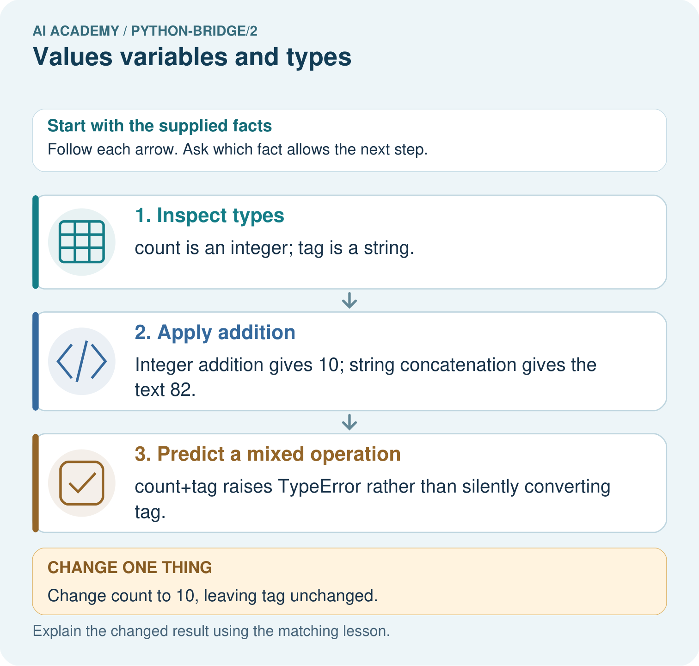

AI Academy · Python readiness bridge · Student lesson
Values variables and types
Learn to understand, design, build, test and explain AI systems responsibly.
Project: Python readiness portfolio
Before you start
What does print(total) do after total = 24?
Plan time to read, investigate and explain. Keep predictions separate from observations.
Student lesson · 1 of 17
Your mission
Your learning target
I can distinguish integer, floating-point, text and Boolean values.
I can trace reassignment without treating a name as a live formula.
I can choose a suitable representation for a count and an identifier.
Remember before reading
Close your notes first. A rough first answer helps us choose the right starting point; it is not a score for your ability.
Without opening the old lesson, explain one key idea from From a paper algorithm to Python. Give an example and a mistake that the idea helps you avoid.
After trying, check the relevant lesson or ask your teacher. Change the part of your explanation that the evidence shows was wrong.
This week you will practise:
Distinguish integer, floating-point, text and Boolean values
Trace reassignment without treating a name as a live formula
Choose a suitable representation for a count and an identifier
Retrieve what you already know
What does print(total) do after total = 24?
This week’s end goal
Trace values variables and types and explain the changed program before running it.
Student lesson · 2 of 17
Notice the evidence
A count and a shelf label can look similar while needing different operations. The integer 8 is a number; "08" is text that preserves a leading zero. You can count eight objects, but adding two shelf labels is usually meaningless. This week you will examine values, trace changes to names and explain which representation a task needs.
Use the saved Python 3 script workflow from Week 1. Make a new file values.py, predict before running and keep actual output separately. Use fictional labels only. Four useful types are int for whole numbers, float for floating-point numbers, str for text, and bool for True or False. A type describes a value, not whether its meaning is sensible for the task.
Student lesson · 3 of 17
See how it works
| Literal in code | Type | Possible meaning |
|---|---|---|
| 8 | int | Number of counters |
| 2.5 | float | Length in metres |
| "08" | str | Shelf identifier |
| True | bool | A yes-or-no condition |
count = 8
shelf = "08"
print(type(count))
print(type(shelf))type(count) produces the type of the value bound to count. These print lines display <class 'int'> and <class 'str'>. The quotes in "08" mark text; they are not displayed by print(shelf). True and False have capital initials and no quotes. "False" is text, not a Boolean.
Connect the picture and the explanation
Point to the input, the deciding step and the result in this week’s visual. Explain the same step in ordinary words. A picture helps when you can say what each part represents.
Student lesson · 4 of 17
Compare the cases
Compare a familiar case with a changed case
Trace the five-line count and saved program. Record both printed outputs, then predict the result of assigning saved = count after the change. Check with a run or label a paper trace.
Change one thing in the pictured case
Change: Change count to 10, leaving tag unchanged.
Prediction: The two valid outputs become 12 and 82.
Reason: Only the integer variable changes; the string still contains the character 8.
Student lesson · 5 of 17
Words that unlock the idea
| Word | Meaning |
|---|---|
| Value | A piece of data such as 8 or a text label |
| Variable | A name bound to a value during execution |
| Type | A category of value that determines available operations |
| String | A sequence of text characters |
| Reassignment | Binding an existing name to a new value |
Student lesson · 6 of 17
Follow a worked example
A saved value is not a live link
count = 8
saved = count
count = count + 2
print(count)
print(saved)The outputs are 10 and 8 on separate lines. saved = count uses the value available at that moment. It does not store a formula that keeps following count. count = count + 2 is valid assignment: read the old 8, calculate 10, then rebind count. It is not a claim that 8 equals 10.
Learn from the worked case
Cover the result before checking it. Say what is given, choose the procedure, and follow one step at a time. Then uncover the result and explain your first mismatch. Ask why a step is allowed, not only what number it produces.
A pictorial worked case: Values variables and types
A number and its printed-looking text. A program stores a numeric badge count and a string that looks like that count.
The facts we will use
Python 3: count=8; tag="8"; print(count+2); print(tag+"2").

Read the picture one step at a time
Why this result follows
Values carry types, not merely appearances. The plus operator performs numeric addition for these integers and concatenation for these strings; the mixed operation is invalid here.
What this example does not establish
These examples use built-in integers and strings; operator behaviour depends on types and is not proof of general model reasoning.
Read the labelled picture: Predict both print outputs and explain why they differ. Does count+tag work, and what happens to each valid output after count becomes ten?
Change one thing: Change count to 10, leaving tag unchanged. Predict the result before checking the explanation. What remains the same?
Student lesson · 7 of 17
Find and repair a mistake
print(8 + 2)
print("8" + "2")
print("8" * 2)These lines display 10, 82 and 88. Number addition calculates a sum. String addition joins text; string multiplication by a whole number repeats it. Python does not infer from the digits that you wanted a number. Trying "8" + 2 instead raises TypeError because this addition mixes text and an integer.
For a supplied count, use a numeric literal such as 8. For a shelf ID, preserve text such as "08". Later weeks will parse and validate data read from files; changing a type alone will not prove that a value is valid. Use descriptive names with underscores, such as shelf_id. Names are case-sensitive: count and Count are different names.
Locate the earliest unsupported step
Predict 6 + 3, "6" + "3" and "6" * 3. Explain what happens for "6" + 3. Which expression counts six groups of three?
Student lesson · 8 of 17
Practise together
Classify 12, 1.5, "12", False and "False". Explain why the last two are different.
Practise with less help: Trace a saved value
Use workbook W2 for the connected example “Values variables and types”. First fill the input and rule boxes. Try the middle steps before asking for a hint. After a hint, try the next step yourself.
| Plan | Do | Check |
|---|---|---|
| What is given? Which rule or procedure applies? | Record each intermediate step. | Does the result follow? What remains unknown? |
Explain your trace to a partner. Your partner points to one step to check. Swap roles on the next case. Each person writes their own explanation.
Check your reasoning
Use the worked case for Values variables and types. Proposed explanation: “Digits always mean a number”. Decide whether this explanation is supported. Point to the step or supplied fact that decides; explain your repair if needed.
Answer on your own before discussion. If you are unsure, say which step you need help with.
Explain the picture
Predict both print outputs and explain why they differ. Does count+tag work, and what happens to each valid output after count becomes ten?
This is supported practice. Keep the separately named independent case for an attempt before feedback.
Student lesson · 9 of 17
Run the investigation
Predict, investigate and preserve the evidence
Trace the five-line count and saved program. Record both printed outputs, then predict the result of assigning saved = count after the change. Check with a run or label a paper trace.
count = 8
shelf = "08"
print(type(count))
print(type(shelf))count = 8
saved = count
count = count + 2
print(count)
print(saved)print(8 + 2)
print("8" + "2")
print("8" * 2)| Record | Your evidence |
|---|---|
| Given input and fixed rule | |
| Prediction before checking | |
| Actual result, or “not run” | |
| First mismatch and one explanation | |
| Boundary or missing input and expected response |
On paper, trace the supplied procedure. If code is provided, predict before running it in a local practice file. Never write an expected answer as though it were an observed run.
Plan → try → check
Before trying: what do I expect, and why? While trying: which step could first go wrong? Afterwards: what did I actually observe, and what should change? Keep “not run” if you only traced the procedure.
Student lesson · 10 of 17
Build your understanding
Explain → apply → challenge
Classify 12, 1.5, "12", False and "False". Explain why the last two are different.
Predict 6 + 3, "6" + "3" and "6" * 3. Explain what happens for "6" + 3. Which expression counts six groups of three?
Give a suitable type for a counter count, a length of 2.5 metres, a shelf ID with a leading zero, and a yes-or-no availability flag. Give a count value with the right type that should still be rejected.
Student lesson · 11 of 17
Connect your project
Add a labelled values variables and types evidence sheet to Python readiness portfolio. Show how you can distinguish integer, floating-point, text and boolean values. Use the supplied fictional case and keep its inputs, intermediate steps, calculation or prediction, and limitation. Connect this record to last week’s record; a matching answer without a trace is insufficient.
| Project evidence | Record |
|---|---|
| Component and version | |
| Inputs permitted at prediction time | |
| Trace and comparison with earlier work | |
| Failure, limit and human review |
Evidence for your project
For Python readiness before the Responsible Plant Classifier, retain a trace of the values, the predicted outputs and the changed-case explanation. Use actual Python 3 results to check the prediction after reasoning first.
Student lesson · 12 of 17
Show what you know
A negative int is still an integer, but it may be invalid as a count of objects. A correctly typed label can still name the wrong shelf. Keep the task’s meaning separate from the value’s Python type. Week 3 uses arithmetic expressions and grouping to calculate with known numeric values.
Give a suitable type for a counter count, a length of 2.5 metres, a shelf ID with a leading zero, and a yes-or-no availability flag. Give a count value with the right type that should still be rejected.
Student lesson · 13 of 17
Study a complete case
Complete evidence record
A saved value is not a live link
Follow the input through the stated procedure to its result. Cover the result first, predict it, then explain every intermediate step. The text/table accompanies the figure so the example can be read without colour.
Student lesson · 14 of 17
Try a new case independently
Independent case: Trace values, types and reassignment
Predict both output lines and explain why estimate stays unchanged when count is reassigned. Repeat the trace with initial count=0. Explain why note is text even though its printed characters look like a number.
count = 4
note = "4"
estimate = count / 2
fits = count <= 5
count = count + 3
print(count, note, estimate, fits)
print(type(count).__name__, type(note).__name__, type(estimate).__name__, type(fits).__name__)
Attempt this case before feedback. Record any help. Earlier examples below are further practice; a case already practised with feedback cannot establish fresh transfer.
Attempt this without hints
A fresh script runs seats = 12; booked = seats; seats = seats - 5; print(seats); print(booked), with each statement on a separate line. Predict both outputs. Then add booked = seats + 1 and print(booked). Explain the evaluation order and choose a type for a seat label "07".
Record support used: none, hint or teacher explanation. After feedback, a different case is needed to demonstrate independence.
Use feedback to improve
Attempt the independent case before hints. Record whether you worked alone, used a hint or followed a model. After feedback, fix the first unsupported step and explain why it changed. A later check uses a changed case, not a copied answer.
Student lesson · 15 of 17
Your lesson route
Start with this question: A number and its printed-looking text. A program stores a numeric badge count and a string that looks like that count.
| By the end, I can | How I will show it |
|---|---|
| Distinguish integer, floating-point, text and Boolean values | Explain the deciding step, show a trace or test, and state one limit. |
| Trace reassignment without treating a name as a live formula | Explain the deciding step, show a trace or test, and state one limit. |
| Choose a suitable representation for a count and an identifier | Explain the deciding step, show a trace or test, and state one limit. |
Remember → watch and explain → try with help → investigate → try independently → keep project evidence. Your teacher may spread this lesson across several classes.
Keep your first prediction. Compare it with what the evidence shows and explain any change.
Student lesson · 16 of 17
Finish and return
Close your notes. Explain this goal in your own words: Distinguish integer, floating-point, text and Boolean values
If you are unsure, return to the worked picture and explain one arrow. If you are ready, change an input or assumption and justify your prediction.
Save your workbook evidence. At the next review, try a different case before opening your old answer.
Student lesson · 17 of 17
Supported practice, repair and portfolio
Use this supported practice once, in the browser or on paper. Keep the reserved independent assessment for a separate first attempt before teacher feedback.
A number and its printed-looking text. A program stores a numeric badge count and a string that looks like that count.
Practice 1: explain the deciding evidence
Which labelled step matches this detail? count+tag raises TypeError rather than silently converting tag.
1. Predict a mixed operation
2. Inspect types
3. Apply addition
Hint if needed: Read the steps in the pictorial case. Match the supplied detail to the stage that performs or records it.
After your attempt, compare with the supported explanation: Predict a mixed operation count+tag raises TypeError rather than silently converting tag. Values carry types, not merely appearances. The plus operator performs numeric addition for these integers and concatenation for these strings; the mixed operation is invalid here.
Practice 2: explain the deciding evidence
Changed-case practice: Change count to 10, leaving tag unchanged. Which conclusion is supported by the supplied facts?
1. This one example guarantees correct results for every future input.
2. We can decide the result without examining the changed input or the procedure.
3. The two valid outputs become 12 and 82.
Hint if needed: Use the changed condition and the deciding step in the pictorial trace. The answer must say what follows from those facts.
After your attempt, compare with the supported explanation: The two valid outputs become 12 and 82. Only the integer variable changes; the string still contains the character 8.
Repair a missing building block
Review From a paper algorithm to Python (python-bridge/1). Goal: Translate a short paper calculation into a Python script. Short practice: Match each paper quantity to its Python name. Why does the spare count get added once, and what prints when spare is five?. Return to this week and explain what you changed.
Predict, run and debug
The browser lab lets you edit the supported Python examples already included in this lesson. Predict first, run, inspect the actual output or error, change one input, then run again. Keep code, predictions, actual results and a reasoned revision together. On paper, label your result as a trace rather than an execution.
Keep your completed work
Use Download completed work in the hosted lesson to export your answers, reflections, practice feedback and code-run evidence. Open the HTML copy to read or print it. Drafts stay in this browser when storage is available; clear drafts on a shared device.